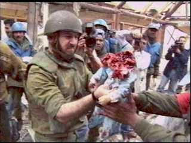
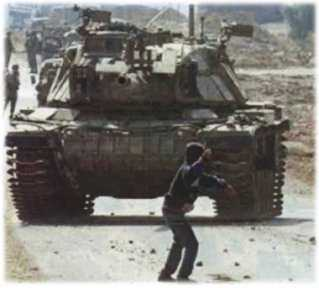
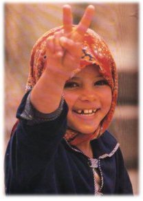
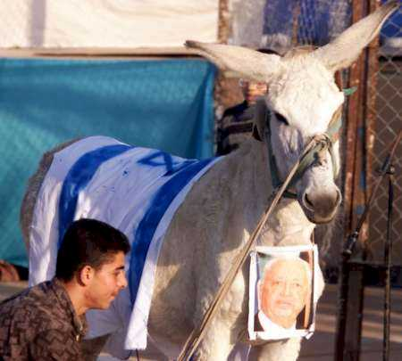
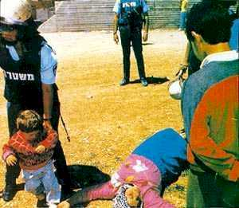
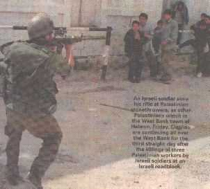
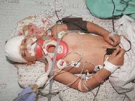

|
9/10/ What if your parents are raped or killed or butchered or slaughtered or what if their faces are ripped off from their body? What if your mother and sister are raped in front of you? What if your father or child is beheaded? Would you be the same? Won't you fight for the truth? Won't you fight for justice? Won't you fight for freedom? If you think that fighting for the right is wrong, then we are afraid you are the most damned person on this earth! Walking on a pathetic flag is not right eh? And what is being done below is right?
 "" A Palestinian baby beheaded by the IDF...If you saw your baby brother being beheaded before your very eyes, will you be the same? Palestinian children in refugee camps see their brothers, sisters, and parents being insulted and abused by the IDF daily. The Israeli army shoots tank shells at Palestinian refugee camps everyday.
 The modern day David against Goliath. Israeli Logic: This little boy is a threat to Israel's "national security" and thus must be gunned down. 6 year old children are fighting against the 4th largest military in the world.
 All she did was wave a peace sign...Even then the Israeli pigs fired at her. According to Israel, if a little girl waves a peace sign at you, you fire tear gas shells at her. (Ofcourse, because little girls are a grave threat to Israel's 'national security'.) May God's damnation be on Israel.
THEY FIRED TEAR GAS AT LITTLE GIRLS...WHAT KIND OF ANIMALS WOULD DO SUCH AN INHUMANE, SUB-HUMAN THING??!?
Dec.
8th : Fifty school girls in Kalkilya treated for tear gas inhalation
Occupied
Jerusalem- Israeli occupation troops today fired several tear gas shells at the
Sharja School for Girls in Kalkilya, causing as many as fifty children to
suffocate.
Israeli Logic:
"If
you kill one person, you are a murderer, if you kill ten people you are a
celebrity, and if you kill a quarter of a million people, you get invited to a
peace conference."
Members actively helping/defacing for the issue : m0r0n, nightman, Cyberpunk, B_real, Brake^Off, Fighter-for-Islam, laughing3y3s, Sofh, h3ll rais3r and Tå|{ê Ñø £Øgîç. Want to join us and help us in spreading the word? E-mail us! We can be reached @ Shouts to :- * Gforce Pakistan [Salute! For hacking against India and showing people what Indian I.T. and Indian hackers really are! www.pakgov.org ??? hacked? huh! It is not even a Pakistani site let alone the rumor of it being the Government of Pakistan's site!] * DoctorNuker and m0s, * Fighter-For-Islam [Thanks for the flash] * n00gie [Salute! For hacking www.ustavnisud.ba/ and delineating the fact that it is not just Kashmir and Palestine which are under atrocities but Bosnia and Kosova are also the victims of terrorism!] * edge and kartoos.a.k.47[Thanks to you people too for hacking for the truth and against the evil!] * Bosnian Hackers (bihnet) * Cyberpunk, B_real and all of WFD, * Dyslexia, mar1no, piffy and Scurvy, * Aniclator, Rsh, Hackweiser, ScorpionKTX, * kr4kr0k, |ncubus_, seninel-, vol, senn, Cool-dude, Undercover and everyone else who supports our cause. 
This pretty much sums up Israel, a racist, fascist Neo-Nazi state that deprives a whole people of their basic freedoms, their own land, and their rightful independence.
|

Israeli soldiers violently push aside a little boy after murdering his mother...The little boy is in shock and disbelief, but the events that he has witnessed have left him with childhood scars that will never heal. His life is destroyed. He's alone... He has no one now...He has nothing left in life... Israeli soldiers have taken away the mother that bore and loved him...

LOOK AT THE FEAR THOSE KIDS HAVE IN THEIR EYES!! Are they terrorists?! By all means no, but they were attacked by the Israeli Army, and when they tried to defend themselves with rocks, the world called them 'terrorists.'
 This Palestinian child was seriously wounded when he was hit with Israeli 'rubber bullets.' THE TRUTH ABOUT RUBBER BULLETS: THEY ARE CREATED TO INFLICT MAXIMUM HARM ON THEIR TARGET, BUT ARE CREATED SO THEY DON'T RICOCHET OFF AND HIT SOMEONE ELSE. RUBBER BULLETS ARE LIKE LIVE AMMUNITION EXCEPT THEY DON'T BOUNCE OFF AND HIT OTHERS. All this child did was defend himself with a rock when he was attacked by the "Holy People."
Which country in the Middle East is in defiance of 69 United Nations Resolutions? Answer: Israel What country is the United States bombing for years because "U.N. Security Council Resolutions must be obeyed?" Answer: Iraq
You say that these Palestinians have guns. Right? Judge it yourself people...do they seem to be murderers? Look in their eyes. Don't you think they have been hurt? See their clothes, do they seem to be soldiers? NO!!! They are just normal civilians like you and us who are forced to come on the roads because of the atrocities by the Israeli's unethical and evil soldiers and politicians! And by the way count the guns in the picture below as compared to the number of "PEOPLE" revolting here.
END THE ILLEGAL ISRAELI OCCUPATION
STOP THE ISRAELI GENOCIDE OF THE PALESTINIAN PEOPLE
Links to check out for the REAL truth: http://www.hoffman-info.com/palestine.html www.geocities.com/the_truth_20002000/truth3.swf http://www.attrition.org/mirror/attrition/2000/12/05/modiin.haifa.ac.il/ http://www.attrition.org/mirror/attrition/2000/12/07/www.volasia.com/ http://www.attrition.org/mirror/attrition/2000/12/12/www.sharon.k12.wi.us/
LONG LIVE PALESTINE! LONG LIVE ISLAM! Israel's downfall is coming. Israel, YOU WILL LOSE: NO MATTER HOW MUCH CONTROL OVER THE WORLD YOU HAVE NO MATTER WHAT YOUR AIRFORCE DOES FOR YOU NO MATTER WHAT THE WORLD BANK DOES FOR YOU NO MATTER WHAT THE INTERNATIONAL MONETARY FUND DOES FOR YOU NO MATTER WHAT THE SECURITY COUNCIL WAS CREATED FOR YOU DO YOU ISRAELIS FIGHT FOR GREED - WE FIGHT FOR GOD OUR DEAD ARE IN PARADISE! YOUR DEAD ARE IN HELLFIRE!
We are grateful to the admin hosting our page for sometime! Copyright m0r0n and nightman inc. 2k. Thanks once again to FIGHTER-FOR-ISLAM for the heart rending flash Admin, He who runs away lives to "hack" another day. ---EOF--- |
|||||||
|
||||||||